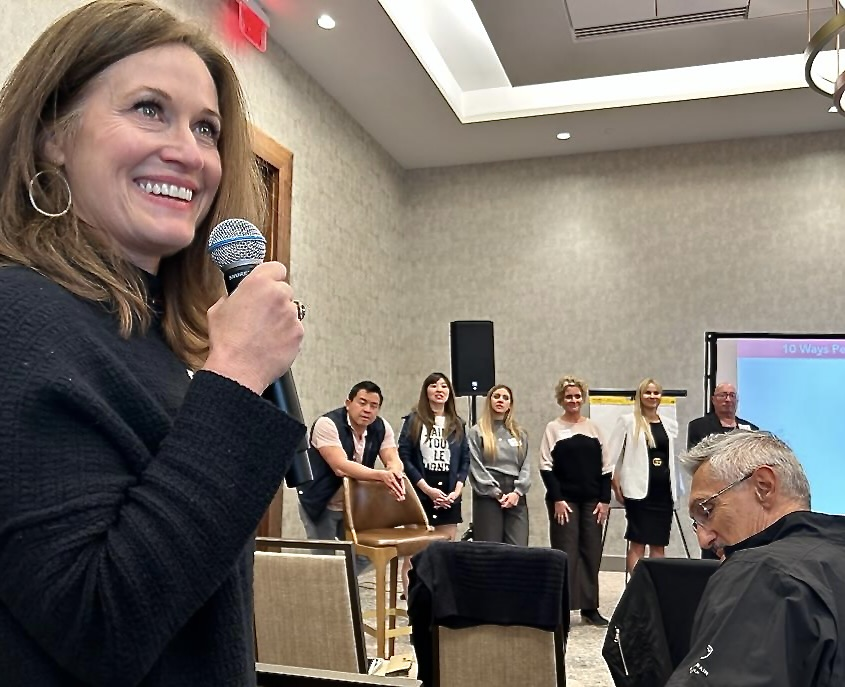
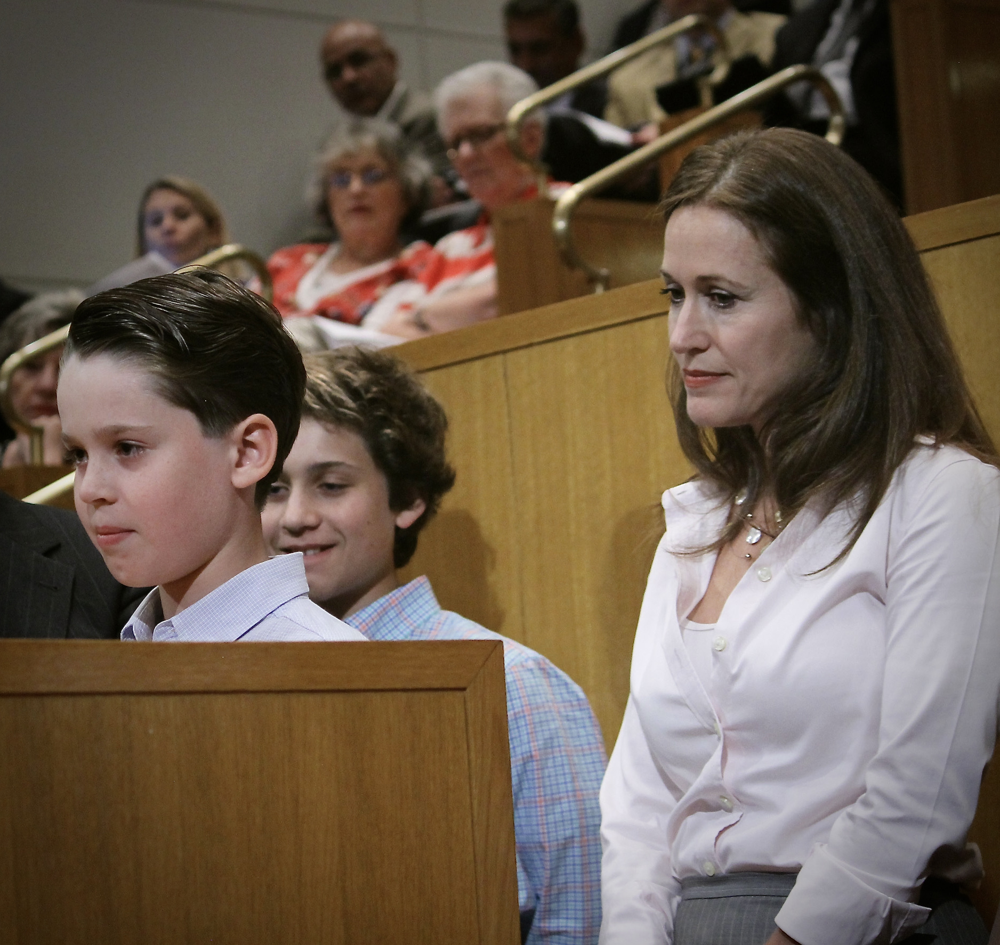
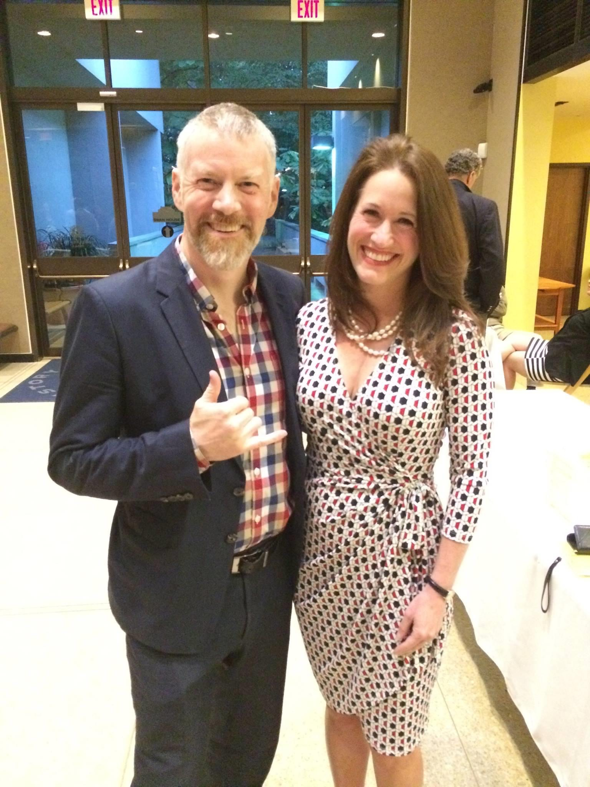
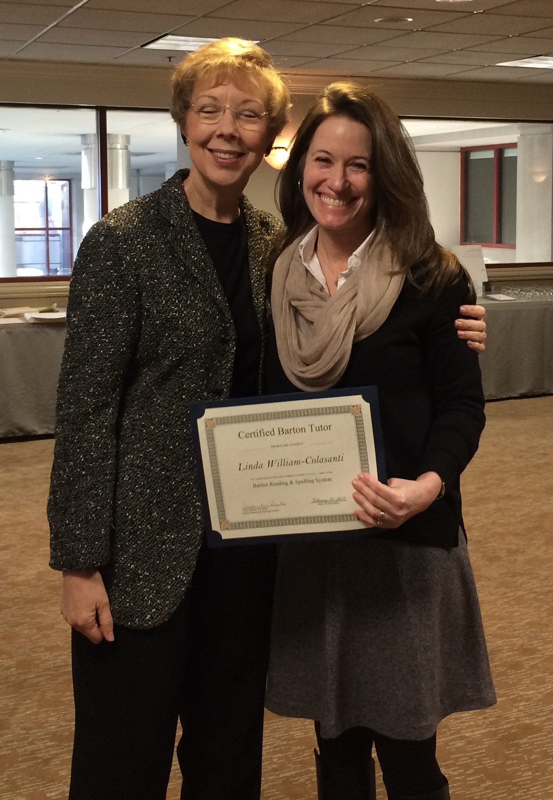
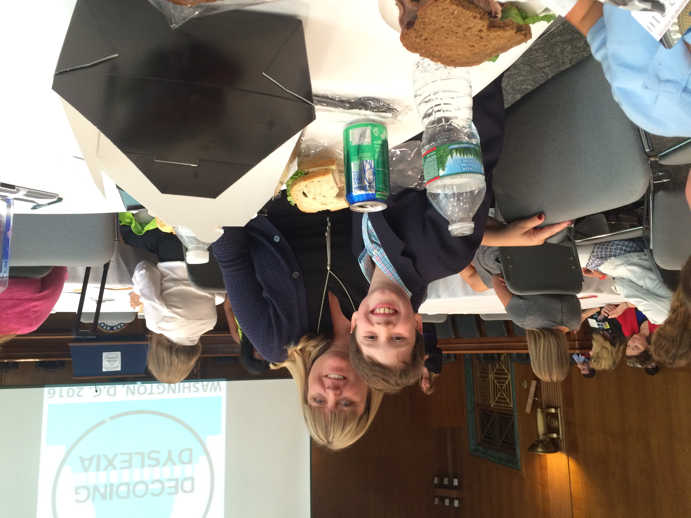
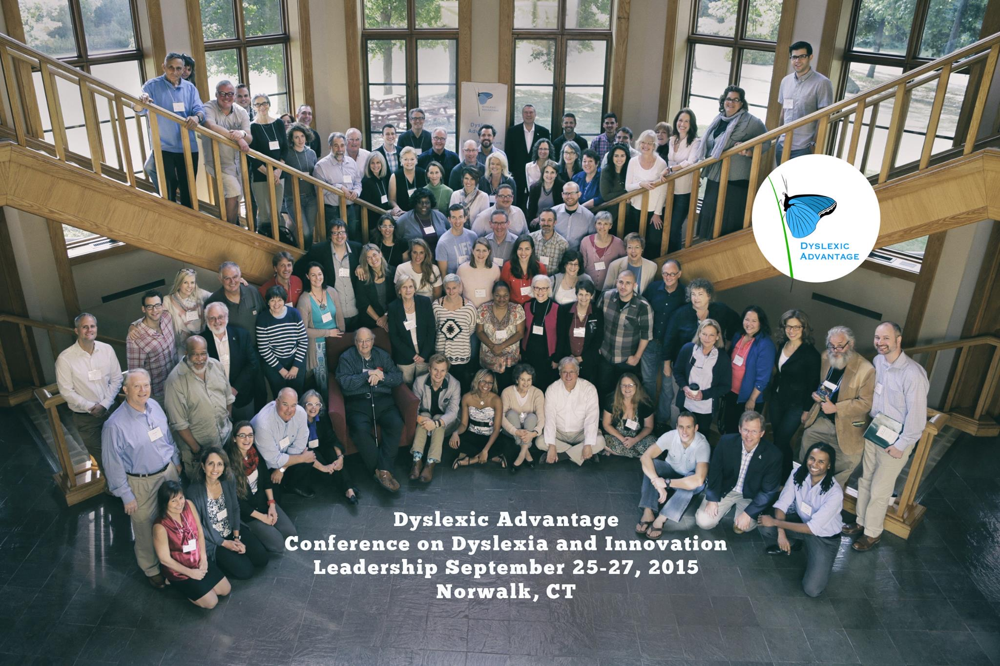
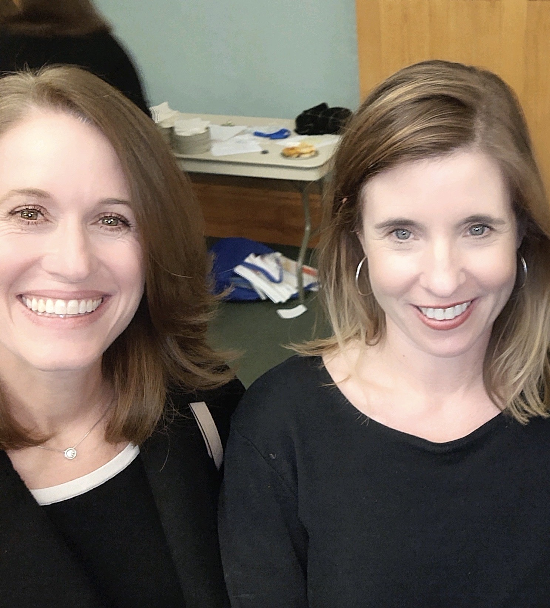

Certified Orton-Gillingham Practitioner · Dyslexia Specialist · Virtual, Worldwide
One specialist. One student. The method that works — delivered by someone who has spent 15+ years proving it. Available virtually, to families everywhere.
That's what I've spent 15 years proving. One student at a time.
Contact LindaEvery session is built around your child — their pace, their gaps, their strengths. No aides. No assistants. No curriculum packages in the mail. Just Linda and your student, working through a proven sequence until reading clicks.
Sessions are conducted virtually — which means families anywhere in the world access the same quality of instruction that Linda has delivered for over 15 years.
Orton-Gillingham is the research-based, multisensory method recognized as the gold standard for dyslexia intervention. Linda led the movement that brought dyslexia legislation to North Carolina — and brings that same conviction to every student she works with.
Every lesson is driven by data, not assumptions. Linda uses a diagnostic-prescriptive approach — assessment first, then a systematic sequence that builds from exactly where your child is.
Linda Colasanti is a Certified Orton-Gillingham Practitioner, Dyslexia Specialist, and NLP Coach with 15+ years of clinical work with struggling readers. She was the legislative architect of North Carolina HB149 — the state's first dyslexia legislation — and led Decoding Dyslexia NC as State Director for six years.
She is the author of Suzy the Struggling Reader, a children's book about dyslexia used by specialists, schools, and families across the country.
NC HB149 — signed July 20, 2017. Linda built the coalition, gathered the data, and wrote the legislation that gave every dyslexic child in North Carolina the right to identification and intervention. Dr. Fernette Eide helped design the research poll whose data was passed directly to NC State Superintendent Dr. June Atkinson — and delivered in person to Superintendent Mark Johnson when the bill became law.

"He was in second grade when he stood at that podium. He spoke about dyslexia to city council because someone had taught him he had something worth saying."
That child is now almost 20. The work Linda does doesn't just teach children to read — it teaches them that their voice matters.
That is the remedy.

Every student is different. The first step is a simple conversation — no pressure, no pitch. Tell me where your child is and what you've already tried, and we'll figure out together if this is the right fit.
A few of the people who have shaped the landscape of dyslexia advocacy, research, and intervention.




